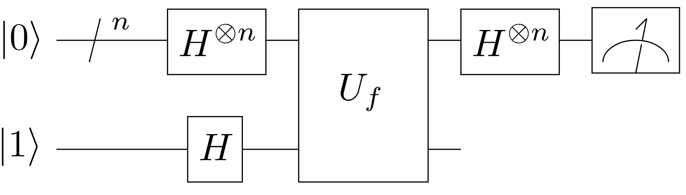
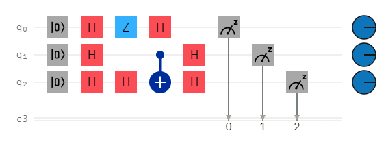

Algorytm Deutscha-Jozsy
Pamiętasz, przykład algorytmu, który przedstawiłem ci na zdjęciu we wprowadzeniu. O to on:

Jest to algorytm Deutscha-Jozsy, który sobie dzisiaj omówimy .Algorytm ten, w czasie kiedy powstał, działał lepiej niż najlepszy algorytm klasyczny. Pokazał on, po raz pierwszy, że że użycie komputera kwantowego jako narzędzia obliczeniowego do rozwiązania konkretnego problemu może przynosić korzyści.
Problem
Problem, jaki rozwiązuje ten algorytm polega na tym, że mamy funkcję boolowską ( jest typ funkcji, który zwraca prawdę lub fałsz, albo 0 lub 1) f, która na wejściu przyjmuje ciąg bitów, a na wyjściu zwraca 0 lub 1. Ta funkcja jest jednak szczególna, ponieważ może być ona albo stała, albo zrównoważona. Żeby taka funkcja była stała, to musi ona zwracać tylko jedynki lub tylko zera. Żeby natomiast była ona zbalansowana to musi dla pierwszej połowy danych zwracać 0, a dla drugiej połowy danych jeden. Zadaniem algorytmu jest ustalenie, czy podana mu funkcja jest stała, czy zrównoważona.
Rozwiązanie klasyczne
Rozwiązanie klasyczne, wygląda w ten sposób, że w najlepszym przypadku, po zadaniu dwóch zapytań do wyroczni ( zaraz powiem co to jest ) już można określić, czy ukryta funkcja jest zrównoważona, czy nie. Jeśli wynikiem pierwszego zapytania będzie 0, a drugiego 1 to już wiemy, że funkcja jest zrównoważona. W najgorszym przypadku, jeśli nadal będziemy widzieć takie same odpowiedzi dla każdego zapytania będziemy musieli sprawdzić dokładnie połowę + 1 wszystkich możliwych danych wejściowych, aby mieć pewność, że ukryta funkcja jest funkcją stała. Na przykład dla 4 bitowego ciągu znaków, jeśli sprawdzilibyśmy 8 z możliwych 16 kombinacji to nadal 9 kombinacja mogła by byś jedynką.
Zanim przejdziemy do rozwiązania kwantowego, do wyjaśnijmy sobie jedno pojęcie. Podczas czytania powyższej części tekstu, w której mówię o klasycznym rozwiązaniu tego algorytmu mogłeś zadać sobie pytanie co to jest wyrocznia. Jest to urządzenie, które odpowiada na zadawane mu pytania "prawdą" lub fałszem, a w naszym algorytmie 0 lub 1. Teraz mogę przejść dalej.
Rozwiązanie kwantowe
Jeśli jednak rozwiązując ten problem mamy do dyspozycji komputer kwantowy to po wykonaniu tylko jednego zapytania możemy już ze 100% pewnością stwierdzić, czy ukryta funkcja jest funkcją stałą, czy zbalansowaną. Teraz przeanalizujmy algorytm Deutscha-Jozsy krok po kroku i zobaczmy jak on działa:
Krok 1. Zainicjuj kubity n w stanie zerowym  .
.

Krok 2. Zastosuj bramę Hadamarda do każdego qubitu.

Krok 3. Zastosuje wyrocznię tego algorytmu.

Krok 4. Powtórz krok drugi.

Krok 5. Zmierz stan każdego qubitu.

Jak widzisz w tym przypadku jest to funkcja stała. Teraz dopowiem ci na pytanie dlaczego to działa. Przypomnij sobie działanie bramki Hadamarda dla stanu  , tworzy ona wtedy superpozycję w stanie i
, tworzy ona wtedy superpozycję w stanie i  Zatem stan jaki otrzymaliśmy po kroku drugim to suma jednolitych superpozycji i każdego z qubitów. Ta grafika przedstawia prawdopodobieństwo na wystąpienie danego stanu po pomiarze:
Zatem stan jaki otrzymaliśmy po kroku drugim to suma jednolitych superpozycji i każdego z qubitów. Ta grafika przedstawia prawdopodobieństwo na wystąpienie danego stanu po pomiarze: